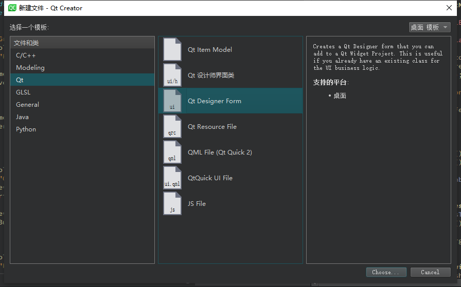

其他常用操作
一、环境配置
1.1、配置craft
1.1.1、安装python3.x
下载python3.x版本，安装后配置好环境变量，确保python命令能够执行
1.1.2、安装powershell 5.0以上版本
下载powershell 7
运行PowerShell-7.1.3-win-x64.msi
- 安装流程安装完毕后默认情况下，包安装位置为
盘符:ProgramFiles\PowerShell\<version> - 如果安装时没勾选添加安装路径添加到
${PATH}内，则进行添加

- 使用
管理员权限运行powershell，键入以下命令以启用脚本运行
Set-ExecutionPolicy -Scope CurrentUser RemoteSigned
- 运行
iex ((new-object net.webclient).DownloadString('https://raw.githubusercontent.com/KDE/craft/master/setup/install_craft.ps1'))
1.1.3、配置编译器
- 下载MinGW64 8.1.0版本(一些版本的Qt自带，可以在
Qt安装目录\Tools\mingw810_64\目录下找到) - 添加
Qt安装目录\Tools\mingw810_64\bin至环境变量
1.1.4、使用方才安装的powershell运行craft.ps1
此步骤中的错误大多为网络问题，注意fetch/get failed等词标志此错误
- 选择craft的安装目录
- 选择默认编译器为MinGW(输入0)


- 随喜好选择，如果选择yes则需要额外下载一些组件


- 等待下载，安装完成，如果由于网络问题导致软件包下载失败，重新运行
craft.ps1重复安装流程，此前可以将download包剪切到目录外，删除安装目录(如: C:\CraftRoot) - 选择完安装目录后，将download文件夹重新粘贴进安装目录，可以节省下载时间
1.1.5、安装完成
安装完成后，运行Craft安装目录\craft\craftenv.ps1，出现类似以下信息则说明craft配置完成
Craft : A:\CraftRoot
Version : master
ABI : windows-mingw_64-gcc
Download directory : A:\CraftRoot\download
编辑环境变量:
PATH=$(PATH);C:\CraftRoot\bin;C:\CraftRoot\dev-utils\bin\;C:\CraftRoot\mingw64\bin
编辑变量 CMAKE_PREFIX_PATH, 添加Craft安装目录 (如: CMAKE_PREFIX_PATH:STRING=%{Qt:QT_INSTALL_PREFIX};C:\CraftRoot)
1.2、编译kdenlive
- 命令行中输入craft kdenlive (
默认构建模式为DebWithRelInfo，如果想以debug模式构建，则输入craft --buildtype Debug kdenlive) - 如果出现由于zlib库导致的编译失败，运行
craft zlib待安装完成后重试
1.3、配置SmartIP-Editor项目
1.3.1、获取源代码
- 运行powershell，cd到该目录下:
craft安装目录\build\kde\kdemultimedia\kdenlive\work\ - git clone https://github.com/LCBHSStudent/kdenlive kde_based_editor
1.3.2、配置QtCreator
- 点击QtCreator菜单栏
工具->选项打开选项窗口 - 选择Kits栏目，打开
Qt Versions选项卡，点击添加，选择Craft安装目录\bin\qmake.exe
- 打开
编译器选项卡，点击添加，分别添加一个C/C++编译器如下，注意ABI的选择
路径为Craft安装目录\mingw64\bin\gcc(g++).exe

- 添加新的调试器

- 添加新的CMake

- 最后，添加Qt Kit，选择CMake、c\c++编译器、调试器、Qt版本为刚才手动添加的版本

- 打开项目文件夹根目录下的CMakeLists.txt，选择编译模式为
ReleaseWithDebugInformation
- 选择build target为
all和install，编译
1.4、部署项目
- 编辑python脚本如下
import shutil
shutil.copy(r'.\bin\SmartIP-Editor.exe', r'A:\CraftRoot\bin') # 改为你的craft安装目录
修改项目运行设置，添加部署方法运行刚刚的python脚本

添加项目运行配置

修改后的编译运行小窗：

二、添加文件到项目
2.1、传统widget类的 .UI 文件和 C++源文件.h .cpp
本项目中使用到的.ui设计师文件皆位于src/ui文件夹内，添加传统widget类时最好分开进行添加，先添加.ui文件，再添加类文件.cpp .h
2.1.1 添加UI
cmake项目文件中定义了ui的加载位置和使用moc生成xxx_ui.h的函数
81 ## UI's
82 file(GLOB kdenlive_UIS "ui/*.ui")
83 ki18n_wrap_ui(kdenlive_UIS ${kdenlive_UIS})
现在需要将ui文件添加到src/ui文件夹内
选择Qt Designer Form

按照引导后，确定添加
2.1.2 添加 class 文件
右键文件夹，选择Add new - c++ class创建.cpp 和 .h 文件，添加到项目和添加到版本控制系统都选择none
随后，找到添加的文件夹位置上层的第一个CMakeLists.txt文件，比如此处向widget文件夹中添加了新的文件，则编辑widget文件夹下的CMakeLists.txt
set(kdenlive_SRCS
${kdenlive_SRCS}
xxx/xxx.cpp
xxx/xxx.cpp
...
# 这里另起一行，写你新加入的文件相对路径
PARENT_SCOPE)
2.1.3、 类代码引用UI
// 包含加入的ui生成的头文件，格式为ui_文件名.h
#include "ui_xxxxxx.h"
随后，采用继承或成员的方式组合到类中即可
2.2、注意事项
如果遇到编译失败问题，报出元对象相关错误，请选择构建-重新构建整个项目选项
三、打包项目
3.1、简便方法
3.1.1、下载运行环境并解压
下载kdenlive官方提供的standalone压缩包，在没有大环境改动的情况下，此安装包几乎包含了程序运行所需要的运行环境
点此下载，完成后随意解压到某个目录保存使用，记得删除bin/kdenlive.exe
3.1.2、复制扩展qml文件
下载后，将 CraftRoot/qml下的文件夹DFW与Shotcut复制到解压目录中的bin文件夹内
3.1.3、添加必要文件
进入bin/data/color-schemes文件夹，添加一个文件名为Classic.colors的文件，内容如下:
[ColorEffects:Disabled]
Color=56,56,56
ColorAmount=0
ColorEffect=0
ContrastAmount=0.65
ContrastEffect=1
IntensityAmount=0.1
IntensityEffect=2
[ColorEffects:Inactive]
ChangeSelectionColor=true
Color=112,111,110
ColorAmount=0.025
ColorEffect=2
ContrastAmount=0.1
ContrastEffect=2
Enable=false
IntensityAmount=0
IntensityEffect=0
[Colors:Button]
BackgroundAlternate=30,87,116
BackgroundNormal=49,54,59
DecorationFocus=62,61,76
DecorationHover=62,61,76
ForegroundActive=62,61,76
ForegroundInactive=161,169,177
ForegroundLink=29,153,243
ForegroundNegative=218,68,83
ForegroundNeutral=246,116,0
ForegroundNormal=252,252,252
ForegroundPositive=39,174,96
ForegroundVisited=155,89,182
[Colors:Complementary]
BackgroundAlternate=30,87,116
BackgroundNormal=45,44,57
DecorationFocus=62,61,76
DecorationHover=62,61,76
ForegroundActive=62,61,76
ForegroundInactive=161,169,177
ForegroundLink=29,153,243
ForegroundNegative=218,68,83
ForegroundNeutral=246,116,0
ForegroundNormal=252,252,252
ForegroundPositive=39,174,96
ForegroundVisited=155,89,182
[Colors:Header]
BackgroundAlternate=45,44,57
BackgroundNormal=49,54,59
DecorationFocus=62,61,76
DecorationHover=62,61,76
ForegroundActive=62,61,76
ForegroundInactive=161,169,177
ForegroundLink=29,153,243
ForegroundNegative=218,68,83
ForegroundNeutral=246,116,0
ForegroundNormal=252,252,252
ForegroundPositive=39,174,96
ForegroundVisited=155,89,182
[Colors:Header][Inactive]
BackgroundAlternate=49,54,59
BackgroundNormal=45,44,57
DecorationFocus=62,61,76
DecorationHover=62,61,76
ForegroundActive=62,61,76
ForegroundInactive=161,169,177
ForegroundLink=29,153,243
ForegroundNegative=218,68,83
ForegroundNeutral=246,116,0
ForegroundNormal=252,252,252
ForegroundPositive=39,174,96
ForegroundVisited=155,89,182
[Colors:Selection]
BackgroundAlternate=30,87,116
BackgroundNormal=62,61,76
DecorationFocus=62,61,76
DecorationHover=62,61,76
ForegroundActive=252,252,252
ForegroundInactive=161,169,177
ForegroundLink=253,188,75
ForegroundNegative=218,68,83
ForegroundNeutral=246,116,0
ForegroundNormal=252,252,252
ForegroundPositive=39,174,96
ForegroundVisited=155,89,182
[Colors:Tooltip]
BackgroundAlternate=45,44,57
BackgroundNormal=49,54,59
DecorationFocus=62,61,76
DecorationHover=62,61,76
ForegroundActive=62,61,76
ForegroundInactive=161,169,177
ForegroundLink=29,153,243
ForegroundNegative=218,68,83
ForegroundNeutral=246,116,0
ForegroundNormal=252,252,252
ForegroundPositive=39,174,96
ForegroundVisited=155,89,182
[Colors:View]
BackgroundAlternate=35,38,41
BackgroundNormal=27,30,32
DecorationFocus=62,61,76
DecorationHover=62,61,76
ForegroundActive=62,61,76
ForegroundInactive=161,169,177
ForegroundLink=29,153,243
ForegroundNegative=218,68,83
ForegroundNeutral=246,116,0
ForegroundNormal=252,252,252
ForegroundPositive=39,174,96
ForegroundVisited=155,89,182
[Colors:Window]
BackgroundAlternate=49,54,59
BackgroundNormal=45,44,57
DecorationFocus=62,61,76
DecorationHover=62,61,76
ForegroundActive=62,61,76
ForegroundInactive=161,169,177
ForegroundLink=29,153,243
ForegroundNegative=218,68,83
ForegroundNeutral=246,116,0
ForegroundNormal=252,252,252
ForegroundPositive=39,174,96
ForegroundVisited=155,89,182
[General]
ColorScheme=Classic
Name=Classic
Name[zh_CN]=经典
Name[zh_TW]=經典
shadeSortColumn=true
[KDE]
contrast=4
[WM]
activeBackground=49,54,59
activeBlend=252,252,252
activeForeground=252,252,252
inactiveBackground=45,44,57
inactiveBlend=161,169,177
inactiveForeground=161,169,177
3.1.4、编译项目 生成可执行文件
使用cmake的MinisizeRelease模式编译生成SmartIP-Editor.exe，完成后放入解压缩运行环境中的bin文件夹即可
3.1.5、压缩包打包(当前)
使用WinRAR等压缩软件将整个解压目录压缩至一个压缩文件内，同样，解压此压缩包后双击bin中的SmartIP-Editor.exe即可运行程序
3.1.6、提示
后续更新打包时只需要替换压缩包/解压目录中的exe文件即可，保留功后续使用以省略上面的某些步骤